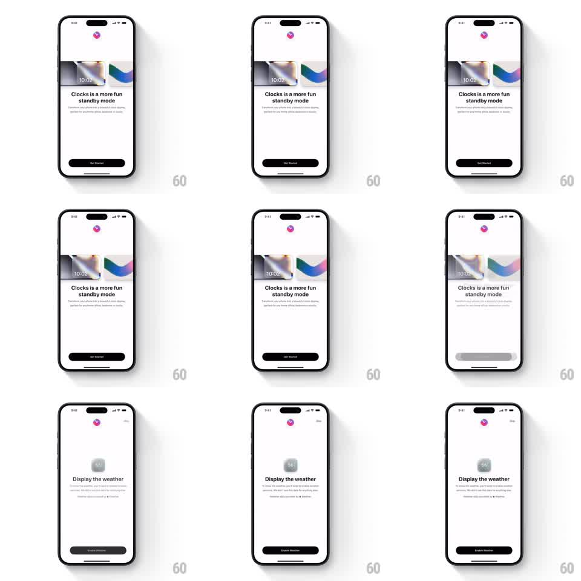

Media
Frame-by-frame

Rebuild this animation 1:1: Clocks' onboarding transition - the "Clocks is a more fun standby mode" page (with a peeking clock card showing 10:02) slides out left as the "Display the weather" page slides in from the right, triggered by the Get Started / Enable Weather button tap, with a smooth horizontal slide and crossfade.

Rebuild this animation 1:1: Clocks' onboarding transition - the "Clocks is a more fun standby mode" page (with a peeking clock card showing 10:02) slides out left as the "Display the weather" page slides in from the right, triggered by the Get Started / Enable Weather button tap, with a smooth horizontal slide and crossfade. ## Integration Integration: stack-agnostic spec - springs given as stiffness/damping, timed motions as duration + curve; map every value to your framework and animation library of choice. ## Scene White onboarding pages. Page one: small app icon top-center, a clock card with gradient art and "10:02" peeking from the left edge, "Clocks is a more fun standby mode" headline with subcopy, black "Get Started" button. Page two: a weather widget card center, "Display the weather" headline with subcopy, a Skip link top-right, black "Enable Weather" button. ## Motion spec Pattern: horizontal page slide with parallax card. - Button tap: the button compresses (scale 0.95, 100ms). - The outgoing page slides left and fades (translateX 0 -> -30% width, opacity -> 0, 350ms ease-in-out); the incoming page slides from the right (translateX 30% -> 0, opacity 0 -> 1, same timing). - The peeking clock card on page one moves with extra parallax (translateX -45%) so it exits faster than the text. - On page two, the weather card drops in from above with a spring (~280/18) once the page lands, then the headline and button fade up staggered (200ms, 80ms apart). - The Skip link fades in last (150ms). ## Calibration - Both pages share one easing curve so the slide reads as a single continuous motion. - The parallax on the card is subtle - it should feel layered, not detached. ## Reduced motion Pages crossfade over 250ms with no horizontal travel. ## Don't miss - The clock card on page one is cropped by the left screen edge - it peeks, it is not centered. - Page two's button label is "Enable Weather", not a generic continue.